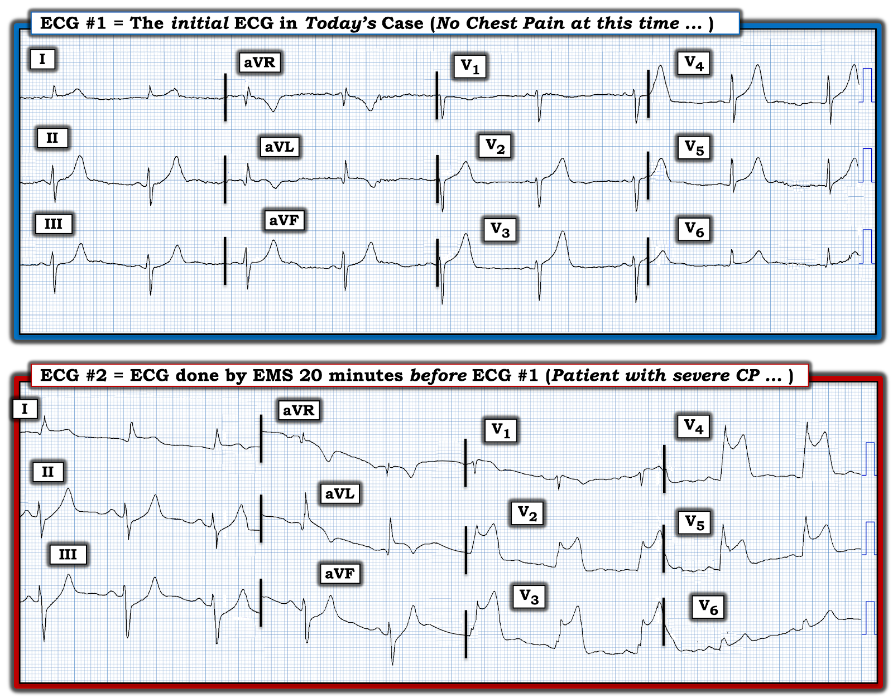
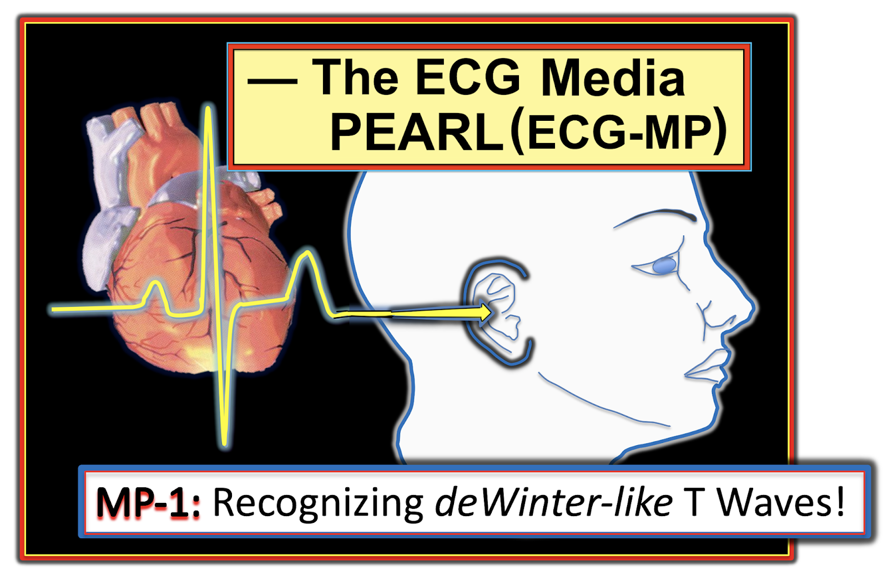

ECG Blog #392 — Sóng T do tái cực?
======================================
— Xem ECG Blog #408 — để xem phần trình bày ca này dưới dạng Video!
======================================
Điện tâm đồ ở Hình 1 được ghi từ một người đàn ông ngoài 60 tuổi — ông mô tả cảm giác "tức ngực" khởi phát đột ngột từ 20 phút trước, nhưng lúc này (tại thời điểm ghi điện tâm đồ này) — ông đã không còn triệu chứng nữa.
- Với bệnh sử này — BẠN sẽ đọc điện tâm đồ này như thế nào?
- Có nên kích hoạt phòng thông tim (cath lab) không?

SUY NGHĨ CỦA TÔI về Điện tâm đồ #1:
Chúng ta không được biết chi tiết tiền sử bệnh của bệnh nhân này. Hiện không có điện tâm đồ cũ nào để so sánh. Vì vậy, chúng ta phải đưa ra nhận định ban đầu mà không có thêm thông tin hỗ trợ. Dù vậy, ngay cả khi không có thêm bệnh sử và không có điện tâm đồ cũ để so sánh — điện tâm đồ ban đầu ở Hình 1 rõ ràng là đáng lo ngại!
Tôi nhận thấy những điểm sau:
- Nhịp là nhịp chậm xoang với tần số ~55-60/phút.
- Khoảng PR và QRS đều bình thường. QTc có thể ở giới hạn trên, nhưng có vẻ không kéo dài rõ rệt.
- Trục mặt phẳng trán lệch trái, phù hợp với LAHB (blốc phân nhánh trái trước — Left Anterior HemiBlock) — vì phức bộ QRS ở chuyển đạo II chủ yếu âm.
- Không có lớn buồng tim.
Về
Thay đổi Q-R-S-T:
- Có một sóng Q có thể có ý nghĩa ở chuyển đạo aVL — vì sóng Q này có vẻ rộng-hơn-mức-đáng-có khi xét đến biên độ nhỏ của QRS ở chuyển đạo này.
- Tăng tiến sóng R — nhìn chung không hẳn là bất thường (tức là, vì sóng r khởi đầu có hiện diện ở cả 3 chuyển đạo trước tim đầu tiên — với biên độ sóng R đáng kể xuất hiện từ chuyển đạo V4, đúng như phải thế). Dù vậy — sóng r ở chuyển đạo V3 vẫn tương đối nhỏ, ~2 mm (LƯU Ý: Tôi sẽ bớt lo ngại về một biến cố cấp ở thành trước nếu sóng r ở các chuyển đạo trước tim cao hơn, thay vì khiêm tốn như những gì ta thấy ở điện tâm đồ #1).
Tiếp tục với Thay đổi sóng ST-T:
- Dấu hiệu nổi bật nhất ở điện tâm đồ #1 — liên quan đến sự hiện diện của sóng T cao, nhọn ở nhiều chuyển đạo (tức là, ở các chuyển đạo II,III,aVF; và ở các chuyển đạo từ V2 đến V6). Những sóng T này cao không tương xứng so với sóng R ở các chuyển đạo này (tức là, sóng T ở các chuyển đạo V2,V3 cao vượt hẳn sóng r 2mm ở các chuyển đạo đó — và sóng T cao ở các chuyển đạo II,III,aVF và ở V4,V5,V6 có chiều cao tương đương [nếu không nói là lớn hơn] sóng R ở các chuyển đạo này).
- Những sóng T cao này đi kèm với đoạn ST dẹt (thẳng đuỗn) ở các chuyển đạo thành dưới — với ST chênh lên nhẹ ở các chuyển đạo từ V2 đến V6 (tuy không đủ để đạt tiêu chuẩn "STEMI" — Akbar và cs., StatPearls, 2023). Dù vậy, đây là những sóng T tối cấp, vì chúng "quá đầy đặn" (hypervoluminous) (tức là, cao hơn và "phình to" ở đỉnh hơn mức đáng có — với đáy sóng T rộng hơn mức đáng có, đặc biệt ở các chuyển đạo từ V2 đến V5).
- Chuyển đạo aVL cho thấy thay đổi soi gương với những gì thấy ở các chuyển đạo thành dưới (tức là, ở chuyển đạo aVL thấy đoạn ST dạng vòm (coving) chênh lên nhẹ — tiếp theo là sóng T đảo ngược đối xứng ở chuyển đạo này, nơi có sóng Q rộng bất thường).
Tổng hợp lại tất cả:
Với Bệnh sử của ca hôm nay (tức là, một người đàn ông ngoài 60 tuổi — đến khám vì "tức ngực" mới xuất hiện ) — Chúng ta phải đọc điện tâm đồ #1 là gợi ý một OMI cấp ( = nhồi máu cơ tim do tắc — Occlusion-based MI) — cho đến khi chứng minh được điều ngược lại.
- Với các sóng T tối cấp rõ rệt bắt đầu ngay từ chuyển đạo V2, kéo dài liên tục đến chuyển đạo V6 — kèm ST-T bất thường ở các chuyển đạo II,III,aVF và aVL — điện tâm đồ #1 nhiều khả năng nhất phản ánh tắc cấp đoạn gần LAD (động mạch liên thất trước — Left Anterior Descending).
- Như đã bàn luận trong nhiều bài của ECG Blog này — dù không thỏa định nghĩa STEMI dựa trên số milimét — ở bệnh nhân đau ngực mới xuất hiện này, các dấu hiệu điện tâm đồ ở Hình 1 đáng được kích hoạt phòng thông tim ngay mà không cần chờ troponin huyết thanh trả về tăng (Xem ECG Blog #193 — về mô hình "OMI" mới).
ĐIỂM THEN CHỐT (PEARL) #1: Như tôi đã thường nhấn mạnh trong ECG Blog này — diễn tiến của nhồi máu cơ tim cấp do tắc động mạch vành cấp — thường ngắt quãng (stuttering). Ý tôi là ngay cả không có PCI hay điều trị tiêu sợi huyết — mạch "thủ phạm" vẫn có thể tự mở lại. Đôi khi mạch "thủ phạm" vẫn mở — nhưng những lúc khác, nó có thể tắc lại vào bất kỳ thời điểm nào. Và, đôi khi quá trình tự mở lại rồi tắc lại này có thể xảy ra nhiều lần liên tiếp trong thời gian ngắn.
- Tầm quan trọng của việc đối chiếu sự hiện diện (và mức độ nặng tương đối) của CP với từng điện tâm đồ liên tiếp ghi trên bệnh nhân — là vì làm như vậy có thể giúp nhận biết mạch "thủ phạm" tại bất kỳ thời điểm nào trong quá trình này nhiều khả năng đang mở hay đang tắc.
- Động mạch vành "thủ phạm" nhiều khả năng đang tắc NẾU — bệnh nhân còn CP (đau ngực — Chest Pain) dữ dội kéo dài, đặc biệt nếu kèm ST chênh lên ở vùng nhồi máu.
- Tái tưới máu tự phát là có khả năng NẾU — cùng với sự giảm (hoặc hết) CP, ST chênh lên và ST chênh xuống soi gương cải thiện đáng kể.
- Tái tưới máu động mạch "thủ phạm" càng có khả năng hơn NẾU — cùng với việc hết CP, ta thấy sóng T "tái tưới máu" (tức là, sóng T đảo ngược) ở những vùng trước đó có ST chênh lên.
- Điểm MẤU CHỐT: Ở đâu đó giữa pha ST chênh lên cấp và lúc đoạn ST trở về đường nền — có thể có một pha "chuyển tiếp" giả bình thường hóa, trong thời gian đó điện tâm đồ có thể trông tương đối bình thường (hoặc chỉ có ST-T dẹt không đặc hiệu). NẾU không chú ý đến sự hiện diện và mức độ nặng tương đối của CP khi đối chiếu với từng điện tâm đồ liên tiếp — thì sẽ cực kỳ DỄ bỏ sót OMI mới xảy ra nếu điện tâm đồ ban đầu được ghi đúng vào pha giả bình thường hóa này.
ĐIỂM THEN CHỐT (PEARL) #2: Áp dụng PEARL #1 vào ca hôm nay — việc triệu chứng của bệnh nhân khởi phát trước khi ghi điện tâm đồ #1, và cơn đau ngực của ông đã hết vào lúc ghi điện tâm đồ #1 — gợi ý mạnh rằng động mạch "thủ phạm" có thể đã tự mở lại. Điều đó cũng cảnh báo chúng ta rằng một điện tâm đồ ghi sớm hơn trong lúc đau ngực có thể trông "tệ hơn" đáng kể so với điện tâm đồ #1.
- Đây là lý do vì sao dù không thỏa tiêu chuẩn STEMI dựa trên số milimét — điện tâm đồ #1 vẫn là chẩn đoán một OMI cấp cho đến khi chứng minh được điều ngược lại (và đáng được thông tim ngay, nhiều khả năng cần PCI).
ĐIỂM THEN CHỐT (PEARL) #3: Điều quan trọng cần nhận thức là trong diễn tiến của OMI cấp — giá trị troponin hs-sensitivity (độ nhạy cao — high-sensitivity) ban đầu đôi khi sẽ bình thường!
- Do đó — một giá trị hs-troponin đơn lẻ nằm trong khoảng "bình thường" không loại trừ OMI. (Điểm này được bàn luận chi tiết trong bài ngày 24 tháng 3 năm 2023 trên Dr. Smith’s ECG Blog).
ĐIỂM THEN CHỐT (PEARL) #4: Về ca hôm nay — những lý do khiến tôi nhấn mạnh rằng chúng ta không cần chờ đến khi troponin trả về tăng rồi mới kích hoạt phòng thông tim là: i) Ở bệnh nhân đến khám với bệnh sử đau ngực mới xuất hiện (như bệnh nhân hôm nay mô tả) — các thay đổi điện tâm đồ ở Hình 1 (đã mô tả chi tiết ở trên) — đã đủ để chẩn đoán OMI cấp (do đó đã đáng được kích hoạt thông tim ngay); và, ii) Không có điều gì mà một giá trị hs-troponin ban đầu có thể cho chúng ta biết mà lại làm thay đổi nhu cầu kích hoạt thông tim ngay này.
- Ngược lại — NẾU giá trị hs-troponin ban đầu trả về bình thường (điều có thể xảy ra — như đã nhấn mạnh ở PEARL #3) — thì rất dễ bị trấn an sai lầm bởi một hs-troponin ban đầu bình thường — điều này có thể gây chậm trễ thêm trong việc thực hiện thông tim cần thiết (mà điều này có thể hóa ra là một sai lầm chết người — NẾU động mạch “thủ phạm” tự tắc lại trong khi nhân viên y tế đang chờ “cho đến khi” hs-troponin cuối cùng cũng tăng).
ĐIỂM THEN CHỐT (PEARL) #5: Khi bàn về các giá trị hs-troponin — điều quan trọng là cần hiểu rằng không phải mọi giá trị “bình thường” đều bình thường “như nhau”.
- Ví dụ, trong bài ngày 24 tháng 3 năm 2023 mà tôi nhắc đến ở trên — không chỉ hs-troponin lần 1 ( = 4 ng/L), mà cả giá trị hs-troponin lần 2 lấy 2 giờ sau đó ( = 16 ng/L) đều nằm trong khoảng "bình thường" (mà với xét nghiệm hs-troponin cụ thể này là ≤16 ng/L với nữ; ≤26 ng/L với nam).
- Như Dr. Smith đã nhấn mạnh khi bàn luận ca ngày 24 tháng 3 này — "Delta" trong 2-3 giờ (tức là, hiệu số giữa giá trị hs-troponin lần 1 và lần 2) — phải nhỏ hơn 3 ng/L. Do đó, mặc dù cả 2 xét nghiệm hs-troponin đầu tiên này đều nằm trong khoảng “bình thường” — delta 12 ng/L (tức là, 16 ng/L — so với 4 ng/L trước đó) rõ ràng là bất thường, và chỉ điểm OMI cấp cho đến khi chứng minh được điều ngược lại.
================================
CA BỆNH TIẾP DIỄN:
Hóa ra ở ca hôm nay đã có một điện tâm đồ được ghi sớm hơn. Để dễ theo dõi — tôi đã đặt cả hai điện tâm đồ này của ca hôm nay cạnh nhau ở Hình 2.
- LƯU Ý: Lý do tôi bắt đầu ca hôm nay bằng điện tâm đồ #1 — là để nhấn mạnh một số điểm quan trọng.


SUY NGHĨ CỦA TÔI về các điện tâm đồ ở Hình 2:
Tần số tim chậm nói chung và trục mặt phẳng trán lệch trái về cơ bản không thay đổi ở 2 bản ghi trong Hình 2.
- Ở các chuyển đạo chi: Mặc dù hình dạng QRS trông tương tự nhau ở điện tâm đồ #1 và điện tâm đồ #2 — rõ ràng đã có ST chênh lên nhiều hơn ở các chuyển đạo I và aVL và ST chênh xuống soi gương nhiều hơn hẳn ở các chuyển đạo thành dưới vào lúc ghi điện tâm đồ #2.
- Ở các chuyển đạo ngực: ST chênh lên ở điện tâm đồ #2 ấn tượng đến mức có thể thấy rõ từ phía bên kia phòng (tức là, mức ST chênh lên vượt quá 5 mm ở các chuyển đạo V2,V3,V5 — và đạt tới 10 mm ở chuyển đạo V4).
- Đáng chú ý là biên độ sóng R ở các chuyển đạo ngực lớn hơn nhiều trên điện tâm đồ ban đầu của ca hôm nay ( = trên điện tâm đồ #2).
- Điểm MẤU CHỐT: Khi đội EMS vừa đến hiện trường — bệnh nhân đau ngực (CP) dữ dội kèm sóng R cao ở các chuyển đạo ngực như thấy trên điện tâm đồ #2, với ST chênh lên rõ rệt và ST chênh xuống soi gương rõ rệt ở các chuyển đạo thành dưới.
- Chỉ 20 phút sau, điện tâm đồ #1 được ghi — lúc đó cơn đau ngực của bệnh nhân đã hết, cùng với biên độ sóng R ở các chuyển đạo ngực giảm đáng kể và ST chênh lên cũng như ST chênh xuống soi gương gần như trở về bình thường. Khi không còn ST chênh lên và chênh xuống — thì chỉ còn lại các sóng T tối cấp trên điện tâm đồ #1.
ĐIỂM THEN CHỐT (PEARL) #6: Mối tương quan đã mô tả ở trên giữa các dấu hiệu điện tâm đồ và thời điểm (cùng mức độ nặng) của triệu chứng đau ngực cho chúng ta biết những điều sau:
- Rằng đoạn gần LAD đã bị tắc cấp khi bệnh nhân đang đau ngực (CP) dữ dội (lúc đội EMS đến — khi điện tâm đồ #2 được ghi).
- Rằng động mạch "thủ phạm" đã tự mở lại ~20 phút sau đó trong khi đội EMS đang trên đường đến bệnh viện (lúc đó CP của bệnh nhân đã hết — và điện tâm đồ #1 được ghi).
- Rằng dù CP của bệnh nhân đã hết và ST chênh lên cũng như chênh xuống đã trở về — việc thông tim ngay kèm PCI vẫn là thiết yếu ở bệnh nhân này, vì nếu không, ông sẽ có nguy cơ động mạch "thủ phạm" tự tắc lại vào bất kỳ lúc nào.
- Điều "cần nhớ" cuối cùng: Hãy hình dung nếu điện tâm đồ #2 đã không được ghi — và thay vào đó, bản ghi đầu tiên (và duy nhất) của EMS là điện tâm đồ #1. Đây là lý do vì sao việc đối chiếu thời điểm xuất hiện (và mức độ nặng) của triệu chứng với từng điện tâm đồ được ghi là thiết yếu — và vì sao trong một ca như ca này, các sóng T tối cấp trên điện tâm đồ #1, dù không thỏa tiêu chuẩn STEMI dựa trên số milimét, vẫn thừa đủ để biện minh cho việc thông tim ngay mà không cần chờ kết quả troponin dương tính.
KẾT LUẬN CA BỆNH:
Bệnh nhân hôm nay đã được thông tim kịp thời — với tái tưới máu thành công và đặt stent cho chỗ tắc đoạn gần LAD.
==================================
Lời cảm ơn: Xin cảm ơn Roy van Melfoort (ở Venhorst, Noord-Brabant, Hà Lan) đã chia sẻ ca bệnh và bản ghi này.
==================================
Các bài ECG Blog liên quan đến ca hôm nay:
- ECG Blog #205 — Ôn lại Cách tiếp cận hệ thống của tôi để đọc điện tâm đồ 12 chuyển đạo.
- ECG Blog #185 — Ôn lại cách tiếp cận Ps, Qs, 3R để đọc nhịp.
- mmm
- ECG Blog #193 — Ôn lại lý do vì sao thuật ngữ “OMI” ( = nhồi máu cơ tim do tắc — Occlusion-based MI) nên thay thế thuật ngữ quen thuộc hơn là STEMI — và — ôn lại những điều cơ bản về cách dự đoán động mạch "thủ phạm" .
- ECG Blog #194 — Ôn lại cách nhận biết LIỆU động mạch “thủ phạm” (tức là, bị tắc cấp) đã được tái tưới máu hay chưa, dựa vào dữ liệu lâm sàng và điện tâm đồ.
- ECG Blog #294 — Cách nhận biết LIỆU động mạch "thủ phạm" đã được tái tưới máu hay chưa.
- ECG Blog #183 — Ôn lại khái niệm sóng T deWinter (kèm bản sao Hình minh họa từ bài báo gốc của deWinter trên NEJM).
- ECG Blog #318 — ECG Blog #340 — và ECG Blog #341 — Thêm về sóng T deWinter và sóng T kiểu deWinter.
- ECG Blog #218 — Ôn lại CÁCH xác định một sóng T là tối cấp?
- ECG Blog #260 — ECG Blog #222 — và ECG Blog #292 — Ôn lại khi nào một sóng T là tối cấp — và khái niệm thay đổi ST-T "động" (dynamic).
- ECG Blog #387 — Thay đổi động chỉ trong 2 phút.
- ECG Blog #230 — Cách so sánh các điện tâm đồ liên tiếp.
- ECG Blog #337 — một ca OMI bị chẩn đoán nhầm là NSTEMI ...
- ECG Blog #184 — minh họa mối quan hệ đối nghịch soi gương "kỳ diệu" khi thiếu máu cục bộ cấp giữa chuyển đạo III và chuyển đạo aVL (được trình bày trong Audio Pearl #2 của bài blog này).
- ECG Blog #167 — một ca khác về mối quan hệ đối nghịch soi gương "kỳ diệu" giữa chuyển đạo III và chuyển đạo aVL đã xác nhận OMI cấp.
- ECG Blog #271 — Ôn lại cách xác định đường nền của đoạn ST (kèm bàn luận về thực thể thiếu máu cục bộ dưới nội tâm mạc lan tỏa).
- ECG Blog #258 — Cách "định tuổi" một ổ nhồi máu dựa trên điện tâm đồ ban đầu.
- Tầm quan trọng của mô hình OMI mới (so với mô hình STEMI cũ) — Xem Bình luận của tôi trong bài ngày 31 tháng 7 năm 2020 trên Dr. Smith's ECG Blog.
- Để ôn lại trường hợp dù có OMI cấp — hs-troponin ban đầu vẫn có thể trả về bình thường — Xem bài ngày 24 tháng 3 năm 2023 trên Dr. Smith’s ECG Blog.

==================================
PHẦN BỔ SUNG (26/8/2023):
- Tôi đã bổ sung thêm một số Pearl Audio bên dưới với nội dung liên quan đến ca hôm nay.


Hôm nay ECG Media PEARL #1 (3:00 phút Audio) — Ôn lại khái niệm sóng T deWinter (và sự thường gặp của các biến thể của "chủ đề" này ).

ECG Media PEARL #35a (4:50 phút Audio) — KHI NÀO một sóng T là tối cấp so với một biến thể tái cực?

ECG Media PEARL #39a (4:50 phút Audio) — Ôn lại khái niệm thay đổi ST-T động (và cách dấu hiệu điện tâm đồ này có thể giúp xác định có chỉ định thông tim cấp hay không).

ECG Media PEARL #46a (6:35 phút Audio) — Ôn lại CÁCH so sánh các điện tâm đồ liên tiếp (tức là, Bạn đang so sánh "Táo với Táo" — hay — với Cam?).

ECG Media PEARL #10 (10 phút Audio) — ôn lại lý do vì sao thuật ngữ “OMI” ( = nhồi máu cơ tim do tắc — Occlusion-based MI) nên thay thế thuật ngữ quen thuộc hơn là STEMI — và — ôn lại những điều cơ bản về cách dự đoán động mạch "thủ phạm".

ECG Media PEARL #11 (6 phút Audio) — Ôn lại cách nhận biết LIỆU động mạch “thủ phạm” (tức là, bị tắc cấp) đã được tái tưới máu hay chưa, dựa vào các tiêu chí lâm sàng và điện tâm đồ.